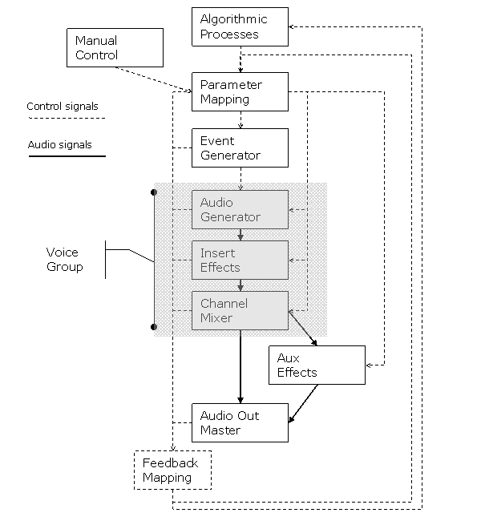

Part I - General Principles
The following is a description of a system under development, as part of an ongoing research project. The research project has the title “New artistic potential by improvisational application of compositional techniques, a new computer instrument for performing musicians”. The research project is part of the Norwegian research program for artistic development work.
The scope of this article is to describe a structural approach to building a modular system for realtime composition. Some details of the implementation will be suggested, but focus will be on the structural framework. The implementation uses Csound as the audio processing core of the system, while higher level processes will be coded in Python, Lisp, C++, or a combination of these. Inter application communications would ideally utilize Open Sound Control, and to some extent the binding between Csound and Python may be utilized. This binding allows Python functions to be called from within Csound, and Csound to be used as a module in Python. The audio processing core of the system might be viewed as a “Sound Server”, in some respects akin to the client-server architecture used in James McCartney’s SuperCollider. The parts of the system implemented in Csound may suggest a programming structure that can make the exchange of Csound instruments between projects easier.During the author’s earlier work with live sampling and improvisation, the common method has been “hard coding” of Csound instruments for one specific purpose. This was a result of hacking away, solving one problem after another, and only intuitively following a more general plan. A fundamental musical goal was always present, but the details of audio processing and compositional techniques were implemented on what could be called a "day to day basis". This led to a complex orchestra of audio instruments, control processes, live sampling instruments, midi control, and graphic interface, all in one tangled mess.
As a substantial part of the ongoing research project, the author’s composition/performance system will be rebuilt. The goal is to create a system for realtime composition and live sampling that is modular and flexible enough that new compositional techniques and ideas can easily be implemented. This should make experimentation with new techniques easier, as the main body of the modular system can remain intact while experimentation is done within separate modules of the software. Each module in the system should have an interface as generic as possible, so that interlinking of modules could easily be done automatically facilitating re-linking of modules during performance. This could also have the side effect that one does not have to load more modules than needed for a specific musical setting, saving CPU resources. The system should have the ability to dynamically load audio generators and compositional control modules. This way, it opens for the possibility that new ideas and directions might occur during the performance of a piece, elements that was not preconceived before the performance started. This combined approach of composition and improvisation allows a piece to be partly planned in advance, and still have the flexibility to evolve for each performance.
Csound is a great language for flexibility and efficiency in audio processing, with a vast library of signal generators and modifiers. However, the language of Csound is not particularly well suited for higher level general programming tasks. This is partly because its architecture and program flow is geared towards the efficient execution of audio processing tasks, and partly because it is an old language, sometimes making it inflexible and cumbersome for programming e.g. algorithmic processes. This is not to say that it is impossible to "do it all" in Csound, especially considering recent additions to the language (like nested loops, wrapping of user code in opcodes and much more). Still, it seems it might be easier to do parts of the programming with other tools. In the last few years, Csound and the scripting language Python have become more compatible, thanks to the effort of Maurizio Umberto Puxeddu and Michael Gogins. Csound can now call Python functions, and also the other way around, as Csound can be used as a Python module. This opens up for extended communications between the two. Python might be a good choice for implementing compositional control algorithms, due to its object orientation, modern syntax and large library of extension modules. Python could also be utilized for implementing a graphical interface for the system, but the final decision on the GUI tool can still be postponed. One could argue that Python is not the most CPU-effective language available, but it seems it's speed will be sufficient for compositional algorithmic control, as these processes does normally evolve at a relatively slow pace compared to e.g. audio processing tasks. The exception being compositional algorithms that works directly on the audio signal.
To make the complete system as flexible as possible, the use of Open Sound Control will be investigated for cross-application communications. This gives the possibility of running each application (algorithmic control, graphics, audio processing) on separate computers, to get access to additional processing power when needed. This model also makes it possible to run all applications on one computer, when only one is available (e.g. touring with a limited laptop setup etc.).
Some Details
The generic design of the modules and instruments could allow for a standardized way of exchanging Csound instruments. New audio generator instruments or audio processing effects instruments might simply be plugged into this architecture, provided they adhere to the input/output routing used in the system. Some effort has been invested in trying to make the handling of processes internal to Csound (e.g. ftables and zak channels) as transparent as possible, meaning the system will take care of handling these things within a standard set of rules. Named ftables is used whenever possible, but there is also an additional layer of collecting and indexing source signals (as stored in ftables). This additional layer is meant to provide a flexible access to any waveform stored in any ftable, treating all source waveforms as one single pool from which each oscillator might pick and choose. Eventually, live input sampling can be seamlessly integrated as source waveform into this pool, with the additional benefit that single musical phrases can be marked as segments. Single sounds can appear as sub-segments to the marked phrases. Any part of the source audio signal might be part of several different phrases of different lengths.
The following figure shows the basic structure of the system as suggested in this article:

In the following sections, I will explain
briefly the building blocks of the system.
Algorithmic Process
Here, this term is used to describe a process generating data or structures that can later be mapped to musical parameters.
This can be implemented in Python or in other scripting language (e.g. LISP)
The process might be a Markov chain, Lindenmayer system, Cellular automata or other organic model suited for generation or transformation of data used as source for musical material. It may also be a timeline or other timed automation process controlling either the other algorithmic processes or handling compositional "preset" situations. The concept of presets might be exemplified as a set of parameters controlling the behavior of the system as a whole. Presets might be worked out and stored prior to performance (or inherited from earlier performances). But, more interesting is maybe the ability to store presets during an improvised performance, to be able to instantly recall musical sections that worked particularly well, creating a framework for structural control within an improvised setting. There will also be a feature for interpolating between presets, so that gradual transitions from one musical situation to another can be done.
Manual control
Two types of manual interaction are suggested. One high level model which directs the automatic processes and one low level model which gives detailed control over one Voice Group at a time. The concept of a Voice Group is used here to describe a single instrument, or multiple instruments treated as a group.
The low level model can be used to play a Voice Group in a manner associated with traditional musical instruments. This can be utilized by the performer to create improvised melodic lines, or other spontaneous musical material as input to the system. It is thought that this type of manual control can lend the system the needed impulsive musical approach associated with improvisation.
The high level control model is used to give access to parameters for the algorithms in play at a given moment. It might also give access to rewiring, or reconnection of other modules in the system. Finally, this layer can give access to the actual mappings of the meta-control parameters found in the mapping module.
All of the manual control parameters should be accessible via a Graphical User Interface (GUI), but it is expected that the GUI will not provide a fast enough interaction model for responsive musical communication with the system. For this purpose, a Physical User Interface (PUI) will be implemented. As an example, this can utilize control surfaces (fader boxes etc.) that communicate via MIDI or Open Sound Control (OSC). Evidently, the PUI will not be portable in the same sense as the software components can be portable. It should of course be transportable, but in most circumstances not directly transferable to another user/performer that uses a different hardware setup.
Graphical Interface
The data streamed from this module should have as generic format as possible, leaving further processing of the data stream to the Mapping Module. The details of the GUI will be worked out at later stage of the project. It is expected that some form of an audio wave display will be used to assign phrases, or slices, of audio to the different mapping modules. Further on, it is expected that a 3D-oriented visual display of objects, modules and processes might give the performer an intuitive insight in the state of the system at a given moment.
Mapping Layer
Taking input from the Algorithmic process, translating the data into musical parameters. This is perhaps the musically most significant layer, where a large part of the compositional work is focused. The implementation and details regarding the modules of the mapping layer are just barely suggested at this stage of the work. It is expected that these will grow out of empirical investigations during the project. The design of these modules must seek to employ a generic and flexible strategy, allowing for experimentation.
This "translation layer" might be implemented in Csound, Python, or perhaps divided between the two. In any case, this layer constitutes the interface to the sound server part of the system.
Direct performer control over audio instruments (e.g. via midi keyboard or other interface) is implemented as a special case of the Mapping Module. One of the features for the mapping module will in this case be to give the performer access to musically relevant parameters as opposed to strictly technical parameters. As a simple example, the term “brightness” might be used as a meta-parameter type, being mapped to frequency modulation index, filter cutoff, and other technical parameters affecting the brightness of a tone.
Event Generator
Takes input from the Mapping Modules and generates instrument events. The Event Generator will facilitate dynamic allocation of control channels and voice number for the different voices. Allocation is done to "Voice Groups". The concept of Voice Groups is here thought of in a similar way to instruments groups in a symphonic orchestra, several voices doing the same job, or variations on the same job.
One Event Generator can initiate several Voice Groups, if the input data calls for it, but more normally it will work on one Voice Group.
Voice Group, audio processing module
This module contains an audio generator, preferably implemented as a generic audio instrument able to generate a wide palette of sounds and transformations. The idea behind this generic approach is that it should be possible to morph seamlessly between different sonic textures only by changing the parameter values to the audio generator.
Each Voice Group has a dedicated Mixing module integrated in its design, possibly with designated insert effects, akin to the use of inserts on a traditional mixing console. Like a mixing console channel, it also has auxiliary sends for master section effects, as well as amplitude and panning.
If the practical implementation shows that it is highly inefficient to use a generic, full-fledged audio generator at all times (e.g. the CPU usage is so high that only 10-15 voices is available on a single computer in real time), it is possible to implement a simplified audio generator for use in settings where the number of voices available is more important than the sonic flexibility of each single voice.
If other instrument designers decide on using the architecture suggested in this article, one could easily suggest the use of any audio generator or instrument as a plug-in to the Voice Group.
Csound’s zak channel system are used for all audio in/out as well as for all k-rate control parameters between instruments. Zak channel numbers are automatically assigned upon initialization of a new Voice Group. This is done via a mechanism that checks for available channels, assigns and indexes channels numbers, and then frees the channels when the Voice Group is no longer in use.
Audio Master Section
This module contains the audio output handling as well as any "always on" effects processing units. The effects might be set up as "effects sends" from the mixer channels, and/or as master insert effects.
Signal feedback
A feedback path needs to be set up to allow signals to travel from the last modules in the chain, back to the first modules. An obvious use of this feedback is for signal display in the graphical user interface, but much more conceptually important is the use of feedback from the audio instruments to affect the parameters of the algorithmic processes. This can potentially lead to a rich network of interrelated processes, where the "top down" organizing structure is balanced by the ability for any process to influence another, on any level of the structure, directly or indirectly. Obviously, the use of direct audio feedback to allow an audio generator to feed back into itself might be a possible use of this feature, albeit with the limitations of Csound’s k-rate processing structure. This implies a delay of 1/kr seconds into the feedback signal chain, introducing quite noticeable artifacts with some signal processing techniques (e.g. frequency modulation with modulator feedback).
Conclusion
Some general principles regarding this approach to programming in Csound has been suggested. One or more follow-up articles are planned, describing in more detail the implementation and giving code examples. An experimental implementation of parts of the system is available through the author, and will be made publicly available as soon as it is considered to be in a generally useable state. Comments and feedback on the issues discussed here is appreciated.